<!-- =================================================================
     Waste Management Collection — Odoo 19 Community description page
     ================================================================= -->
<section class="oe_container" style="background-color:#F7F8F6; color:#1A1B1D; font-family:-apple-system,BlinkMacSystemFont,'Segoe UI',Helvetica,Arial,sans-serif; font-size:16px; line-height:1.6; padding:0; margin:0;">

  <div style="width:100%; max-width:1240px; margin:0 auto; padding:28px 16px 80px;">

    <!-- ============ COMPATIBILITY BAR ============ -->
    <table cellpadding="0" cellspacing="0" border="0" style="width:100%; table-layout:fixed; border-collapse:collapse; background-color:#FFFFFF; border:1px solid #E4E6E2; border-radius:14px; margin-bottom:24px;">
      <tr>
        <td style="vertical-align:middle; padding:16px 24px; width:30%;">
          <span style="font-weight:800; font-size:12px; text-transform:uppercase; letter-spacing:0.1em; color:#8B9099; margin-right:8px;">Supports</span>
          <span style="padding:6px 14px; border-radius:20px; font-weight:700; font-size:13px; background-color:#1A1B1D; color:#FFFFFF; border:1px solid #1A1B1D; display:inline-block;">Community</span>
        </td>
        <td style="vertical-align:middle; padding:16px 24px; width:70%; text-align:right;">
          <span style="font-weight:800; font-size:12px; text-transform:uppercase; letter-spacing:0.1em; color:#8B9099; margin-right:8px;">Availability</span>
          <span style="padding:6px 14px; border-radius:20px; font-weight:700; font-size:13px; background-color:#FFFFFF; border:1px solid #E4E6E2; color:#1A1B1D; display:inline-block; margin:3px 0 3px 4px;">
            <i class="fa fa-check-circle" style="color:#2F6B4F; margin-right:6px;"></i>On Premise
          </span>
          <span style="padding:6px 14px; border-radius:20px; font-weight:700; font-size:13px; background-color:#FFFFFF; border:1px solid #E4E6E2; color:#8B9099; display:inline-block; margin:3px 0 3px 4px;">
            <i class="fa fa-times-circle" style="color:#B4B8B0; margin-right:6px;"></i>Odoo.sh
          </span>
        </td>
      </tr>
    </table>

    <!-- ============ HERO BANNER ============ -->
    <div style="background-color:#F3F8EC; border:1px solid #E4E6E2; border-radius:20px; padding:48px 40px; margin-bottom:32px;">
      <p style="font-size:13px; font-weight:800; letter-spacing:0.16em; text-transform:uppercase; color:#82901F; margin:0 0 12px;">
        <span style="display:inline-block; width:22px; height:2px; background-color:#B5C235; vertical-align:middle; margin-right:10px;"></span>
        Odoo 19 &middot; Waste Management Collection
      </p>
      <h1 style="font-size:42px; font-weight:800; color:#1A1B1D; margin:0 0 18px; line-height:1.15; letter-spacing:-0.02em; max-width:900px;">
        Fleet Routing, Dispatch &amp; Driver Operations
      </h1>
      <p style="font-size:17px; color:#5C6066; margin:0 0 28px; line-height:1.6; max-width:820px;">
        Leaflet route planning, one-click stop sequencing, per-category weight and signature capture on collection orders, guided batch sorting, and vehicle pre-trip checklists in Odoo 19.
      </p>
      <div>
        <a href="mailto:odoo@cybrosys.com" style="display:inline-block; font-size:15px; font-weight:700; text-decoration:none; padding:13px 24px; border-radius:14px; background-color:#B5C235; color:#1A1B1D; border:1px solid #A2AF2C; margin:4px 8px 4px 0;">
          <i class="fa fa-envelope" style="margin-right:9px;"></i>Email Us
        </a>
        <a href="https://teams.microsoft.com/l/chat/0/0?users=odoo@cybrosys.com" style="display:inline-block; font-size:15px; font-weight:700; text-decoration:none; padding:13px 24px; border-radius:14px; background-color:#FFFFFF; color:#1A1B1D; border:1px solid #E4E6E2; margin:4px 8px 4px 0;">
          <i class="fa fa-users" style="color:#5059C9; margin-right:9px;"></i>Teams
        </a>
        <a href="https://wa.me/919074270811" target="_blank" style="display:inline-block; font-size:15px; font-weight:700; text-decoration:none; padding:13px 24px; border-radius:14px; background-color:#FFFFFF; color:#1A1B1D; border:1px solid #E4E6E2; margin:4px 8px 4px 0;">
          <i class="fa fa-whatsapp" style="color:#25D366; margin-right:9px;"></i>+91 9074270811
        </a>
      </div>
    </div>

    <!-- ============ WORKFLOW PIPELINE ============ -->
    <div style="background-color:#FFFFFF; border:1px solid #E4E6E2; border-radius:20px; padding:44px 36px; margin-bottom:32px;">
      <div style="text-align:center; margin-bottom:36px;">
        <p style="font-size:12px; font-weight:800; letter-spacing:0.18em; text-transform:uppercase; color:#82901F; margin:0 0 12px;">Operational Pipeline</p>
        <h2 style="font-size:32px; font-weight:800; color:#1A1B1D; margin:0 0 12px; line-height:1.2;">From Dispatch to MRF Intake</h2>
        <p style="font-size:17px; color:#5C6066; max-width:700px; margin:0 auto; line-height:1.6;">An integrated daily execution lifecycle connecting dispatchers, vehicle drivers, and recovery processing facilities.</p>
      </div>

      <table cellpadding="0" cellspacing="0" border="0" style="width:100%; table-layout:fixed; border-collapse:separate; border-spacing:12px;">
        <tr>
          <td style="width:33.33%; vertical-align:top; border-top:2px solid #E4E6E2; padding-top:14px; word-wrap:break-word;">
            <div style="font-size:13px; font-weight:800; color:#8B9099; margin-bottom:6px;">01</div>
            <h3 style="font-size:16px; font-weight:700; color:#1A1B1D; margin:0 0 6px;">Route Scheduling</h3>
            <p style="font-size:14px; color:#5C6066; margin:0; line-height:1.5;">Group collection orders into routes by service zone, with a route fill level (collected weight against vehicle payload capacity).</p>
          </td>
          <td style="width:33.33%; vertical-align:top; border-top:2px solid #E4E6E2; padding-top:14px; word-wrap:break-word;">
            <div style="font-size:13px; font-weight:800; color:#8B9099; margin-bottom:6px;">02</div>
            <h3 style="font-size:16px; font-weight:700; color:#1A1B1D; margin:0 0 6px;">Map Sequencing</h3>
            <p style="font-size:14px; color:#5C6066; margin:0; line-height:1.5;">Interactive Leaflet map with 1-click stop re-ordering by shortest straight-line distance.</p>
          </td>
          <td style="width:33.33%; vertical-align:top; border-top:2px solid #E4E6E2; padding-top:14px; word-wrap:break-word;">
            <div style="font-size:13px; font-weight:800; color:#8B9099; margin-bottom:6px;">03</div>
            <h3 style="font-size:16px; font-weight:700; color:#1A1B1D; margin:0 0 6px;">Safety Checklist</h3>
            <p style="font-size:14px; color:#5C6066; margin:0; line-height:1.5;">Drivers complete pre-trip roadworthiness surveys and equipment checks.</p>
          </td>
        </tr>
        <tr>
          <td style="width:33.33%; vertical-align:top; border-top:2px solid #E4E6E2; padding-top:14px; word-wrap:break-word;">
            <div style="font-size:13px; font-weight:800; color:#8B9099; margin-bottom:6px;">04</div>
            <h3 style="font-size:16px; font-weight:700; color:#1A1B1D; margin:0 0 6px;">Mobile Logging</h3>
            <p style="font-size:14px; color:#5C6066; margin:0; line-height:1.5;">Log weights by waste category on each collection order and capture customer digital signatures.</p>
          </td>
          <td style="width:33.33%; vertical-align:top; border-top:2px solid #E4E6E2; padding-top:14px; word-wrap:break-word;">
            <div style="font-size:13px; font-weight:800; color:#8B9099; margin-bottom:6px;">05</div>
            <h3 style="font-size:16px; font-weight:700; color:#1A1B1D; margin:0 0 6px;">Batch Intake</h3>
            <p style="font-size:14px; color:#5C6066; margin:0; line-height:1.5;">Completing a route automatically synthesizes inbound category waste batches.</p>
          </td>
          <td style="width:33.33%; vertical-align:top; border-top:2px solid #E4E6E2; padding-top:14px; word-wrap:break-word;">
            <div style="font-size:13px; font-weight:800; color:#8B9099; margin-bottom:6px;">06</div>
            <h3 style="font-size:16px; font-weight:700; color:#1A1B1D; margin:0 0 6px;">Guided Sorting</h3>
            <p style="font-size:14px; color:#5C6066; margin:0; line-height:1.5;">Wizard-driven breakdown into secondary recyclable commodity lines.</p>
          </td>
        </tr>
      </table>
    </div>

    <!-- ============ CORE CAPABILITIES ============ -->
    <div style="background-color:#FFFFFF; border:1px solid #E4E6E2; border-radius:20px; padding:44px 36px; margin-bottom:32px;">
      <div style="text-align:center; margin-bottom:36px;">
        <p style="font-size:12px; font-weight:800; letter-spacing:0.18em; text-transform:uppercase; color:#82901F; margin:0 0 12px;">Core Capabilities</p>
        <h2 style="font-size:32px; font-weight:800; color:#1A1B1D; margin:0 0 12px; line-height:1.2;">Engineered for Waste Fleet Operations</h2>
        <p style="font-size:17px; color:#5C6066; max-width:700px; margin:0 auto; line-height:1.6;">High-performance tools for route dispatch, driver execution, and fleet efficiency.</p>
      </div>

      <table cellpadding="0" cellspacing="0" border="0" style="width:100%; table-layout:fixed; border-collapse:separate; border-spacing:12px;">
        <tr>
          <td style="width:33.33%; vertical-align:top; background-color:#F7F8F6; border:1px solid #E4E6E2; border-radius:14px; padding:22px; word-wrap:break-word;">
            <span style="display:inline-block; width:40px; height:40px; line-height:40px; text-align:center; border-radius:10px; background-color:#FFFFFF; color:#82901F; border:1px solid #E4E6E2; margin-bottom:12px;"><i class="fa fa-trash-o" style="font-size:18px;"></i></span>
            <h3 style="font-size:16px; font-weight:700; color:#1A1B1D; margin:0 0 6px;">Category Weight Logging</h3>
            <p style="font-size:14px; color:#5C6066; margin:0; line-height:1.5;">Record collected weight by waste category on each collection order, from the back office or the driver app, with customer e-signatures.</p>
          </td>
          <td style="width:33.33%; vertical-align:top; background-color:#F7F8F6; border:1px solid #E4E6E2; border-radius:14px; padding:22px; word-wrap:break-word;">
            <span style="display:inline-block; width:40px; height:40px; line-height:40px; text-align:center; border-radius:10px; background-color:#FFFFFF; color:#82901F; border:1px solid #E4E6E2; margin-bottom:12px;"><i class="fa fa-road" style="font-size:18px;"></i></span>
            <h3 style="font-size:16px; font-weight:700; color:#1A1B1D; margin:0 0 6px;">Interactive Leaflet Route Map</h3>
            <p style="font-size:14px; color:#5C6066; margin:0; line-height:1.5;">Geolocated stop sequencing with numbered waypoints, road-path lines from an OSRM routing server (straight-line fallback), and estimated distance and travel time. The route form shows a fill-level percentage of collected weight against vehicle payload capacity.</p>
          </td>
          <td style="width:33.33%; vertical-align:top; background-color:#F7F8F6; border:1px solid #E4E6E2; border-radius:14px; padding:22px; word-wrap:break-word;">
            <span style="display:inline-block; width:40px; height:40px; line-height:40px; text-align:center; border-radius:10px; background-color:#FFFFFF; color:#82901F; border:1px solid #E4E6E2; margin-bottom:12px;"><i class="fa fa-bolt" style="font-size:18px;"></i></span>
            <h3 style="font-size:16px; font-weight:700; color:#1A1B1D; margin:0 0 6px;">One-Click Route Optimization</h3>
            <p style="font-size:14px; color:#5C6066; margin:0; line-height:1.5;">Resequence pickup stops in one click to shorten total driving distance (nearest-neighbour plus 2-opt on straight-line distances; traffic is not considered).</p>
          </td>
        </tr>
        <tr>
          <td style="width:33.33%; vertical-align:top; background-color:#F7F8F6; border:1px solid #E4E6E2; border-radius:14px; padding:22px; word-wrap:break-word;">
            <span style="display:inline-block; width:40px; height:40px; line-height:40px; text-align:center; border-radius:10px; background-color:#FFFFFF; color:#82901F; border:1px solid #E4E6E2; margin-bottom:12px;"><i class="fa fa-users" style="font-size:18px;"></i></span>
            <h3 style="font-size:16px; font-weight:700; color:#1A1B1D; margin:0 0 6px;">Driver Shift &amp; Fleet Dispatch</h3>
            <p style="font-size:14px; color:#5C6066; margin:0; line-height:1.5;">Track driver shifts and hours driven, assign vehicles and drivers to routes, and reassign a route to another driver with a recorded reason.</p>
          </td>
          <td style="width:33.33%; vertical-align:top; background-color:#F7F8F6; border:1px solid #E4E6E2; border-radius:14px; padding:22px; word-wrap:break-word;">
            <span style="display:inline-block; width:40px; height:40px; line-height:40px; text-align:center; border-radius:10px; background-color:#FFFFFF; color:#82901F; border:1px solid #E4E6E2; margin-bottom:12px;"><i class="fa fa-truck" style="font-size:18px;"></i></span>
            <h3 style="font-size:16px; font-weight:700; color:#1A1B1D; margin:0 0 6px;">Vehicle Safety Surveys</h3>
            <p style="font-size:14px; color:#5C6066; margin:0; line-height:1.5;">Pre-trip and post-trip inspection surveys, a vehicle maintenance checklist, and breakdown failover to a standby vehicle.</p>
          </td>
          <td style="width:33.33%; vertical-align:top; background-color:#F7F8F6; border:1px solid #E4E6E2; border-radius:14px; padding:22px; word-wrap:break-word;">
            <span style="display:inline-block; width:40px; height:40px; line-height:40px; text-align:center; border-radius:10px; background-color:#FFFFFF; color:#82901F; border:1px solid #E4E6E2; margin-bottom:12px;"><i class="fa fa-times-circle" style="font-size:18px;"></i></span>
            <h3 style="font-size:16px; font-weight:700; color:#1A1B1D; margin:0 0 6px;">Missed Pickup Tracking</h3>
            <p style="font-size:14px; color:#5C6066; margin:0; line-height:1.5;">With Missed Collections enabled in Settings, log missed collections with a reason (for example Access Issue, Bin Not Out, Hazard on Site), notify the customer by email, and create a next-day retry order automatically.</p>
          </td>
        </tr>
        <tr>
          <td style="width:33.33%; vertical-align:top; background-color:#F7F8F6; border:1px solid #E4E6E2; border-radius:14px; padding:22px; word-wrap:break-word;">
            <span style="display:inline-block; width:40px; height:40px; line-height:40px; text-align:center; border-radius:10px; background-color:#FFFFFF; color:#82901F; border:1px solid #E4E6E2; margin-bottom:12px;"><i class="fa fa-building-o" style="font-size:18px;"></i></span>
            <h3 style="font-size:16px; font-weight:700; color:#1A1B1D; margin:0 0 6px;">Facility Gate Entry &amp; Weighbridge</h3>
            <p style="font-size:14px; color:#5C6066; margin:0; line-height:1.5;">Gate entry tickets are created automatically when a collection order is completed; confirm the payload weight received at the gate (pre-filled from the order), with load variance reconciliation against the order's weight, and gate rejections.</p>
          </td>
          <td style="width:33.33%; vertical-align:top; background-color:#F7F8F6; border:1px solid #E4E6E2; border-radius:14px; padding:22px; word-wrap:break-word;">
            <span style="display:inline-block; width:40px; height:40px; line-height:40px; text-align:center; border-radius:10px; background-color:#FFFFFF; color:#82901F; border:1px solid #E4E6E2; margin-bottom:12px;"><i class="fa fa-archive" style="font-size:18px;"></i></span>
            <h3 style="font-size:16px; font-weight:700; color:#1A1B1D; margin:0 0 6px;">Container Asset &amp; RFID Tracking</h3>
            <p style="font-size:14px; color:#5C6066; margin:0; line-height:1.5;">Track physical container inventory with a unique barcode / RFID tag / serial identifier and operational states (In Yard, Deployed, Needs Cleaning, Damaged, and Awaiting Pickup).</p>
          </td>
          <td style="width:33.33%; vertical-align:top; background-color:#F7F8F6; border:1px solid #E4E6E2; border-radius:14px; padding:22px; word-wrap:break-word;">
            <span style="display:inline-block; width:40px; height:40px; line-height:40px; text-align:center; border-radius:10px; background-color:#FFFFFF; color:#82901F; border:1px solid #E4E6E2; margin-bottom:12px;"><i class="fa fa-history" style="font-size:18px;"></i></span>
            <h3 style="font-size:16px; font-weight:700; color:#1A1B1D; margin:0 0 6px;">Order Lifecycle &amp; Status Logs</h3>
            <p style="font-size:14px; color:#5C6066; margin:0; line-height:1.5;">Driver stop-status log (En Route, Arrived, Started, Lifted, Weighed, Completed, Flagged) with a manual status update wizard, notes, and chatter tracking of order state changes.</p>
          </td>
        </tr>
      </table>
    </div>

    <!-- ============ TABS ============ -->
    <style>
      section.oe_container .nav-tabs { border:none !important; }
      section.oe_container .nav-tabs .nav-link.active { background:#82901F !important; color:#fff !important; border-radius:24px !important; box-shadow:0 4px 12px rgba(130,144,31,0.28) !important; }
      section.oe_container input[type="radio"].wm-tab-input { display:none !important; }
      section.oe_container .tab-pane { display:none; }
      section.oe_container .tab-pane.active { display:block !important; }
      #wm-ss-radio:checked~.tab-content #wm-screenshots,#wm-ft-radio:checked~.tab-content #wm-features,#wm-fq-radio:checked~.tab-content #wm-faqs,#wm-rl-radio:checked~.tab-content #wm-releases { display:block !important; }
      #wm-ft-radio:checked~.tab-content #wm-screenshots.active,#wm-fq-radio:checked~.tab-content #wm-screenshots.active,#wm-rl-radio:checked~.tab-content #wm-screenshots.active { display:none !important; }
      #wm-ss-radio:checked~div ul.nav-tabs #wm-screenshots-tab,#wm-ft-radio:checked~div ul.nav-tabs #wm-features-tab,#wm-fq-radio:checked~div ul.nav-tabs #wm-faqs-tab,#wm-rl-radio:checked~div ul.nav-tabs #wm-releases-tab { background:#82901F !important; color:#fff !important; border-radius:24px !important; box-shadow:0 4px 12px rgba(130,144,31,0.28) !important; }
      #wm-ft-radio:checked~div ul.nav-tabs #wm-screenshots-tab.active,#wm-fq-radio:checked~div ul.nav-tabs #wm-screenshots-tab.active,#wm-rl-radio:checked~div ul.nav-tabs #wm-screenshots-tab.active { background:transparent !important; color:#5C6066 !important; box-shadow:none !important; border-radius:24px !important; }
    </style>

    <div style="background-color:#FFFFFF; border:1px solid #E4E6E2; border-radius:20px; padding:40px 36px; margin-bottom:32px;">
      <input type="radio" id="wm-ss-radio" name="wm-tabs" class="wm-tab-input" checked style="display:none" />
      <input type="radio" id="wm-ft-radio" name="wm-tabs" class="wm-tab-input" style="display:none" />
      <input type="radio" id="wm-fq-radio" name="wm-tabs" class="wm-tab-input" style="display:none" />
      <input type="radio" id="wm-rl-radio" name="wm-tabs" class="wm-tab-input" style="display:none" />

      <div style="text-align:center; margin-bottom:2rem;"><ul class="nav nav-tabs" id="wmCollTab" role="tablist" style="border:none; background:#F3F4EE; border-radius:30px; padding:6px; display:inline-flex; list-style:none; margin:0 auto; box-shadow:inset 0 2px 4px rgba(26,27,29,0.05);">
        <li class="nav-item" role="presentation" style="margin:0;"><label class="nav-link active" id="wm-screenshots-tab" data-bs-toggle="tab" data-toggle="tab" href="#wm-screenshots" for="wm-ss-radio" role="tab" style="text-decoration:none; display:inline-block; border-radius:24px; margin:0 3px; cursor:pointer; padding:11px 26px; font-weight:700; font-size:14px; color:#5C6066;">Screenshots</label></li>
        <li class="nav-item" role="presentation" style="margin:0;"><label class="nav-link" id="wm-features-tab" data-bs-toggle="tab" data-toggle="tab" href="#wm-features" for="wm-ft-radio" role="tab" style="text-decoration:none; display:inline-block; border-radius:24px; margin:0 3px; cursor:pointer; padding:11px 26px; font-weight:700; font-size:14px; color:#5C6066;">Features</label></li>
        <li class="nav-item" role="presentation" style="margin:0;"><label class="nav-link" id="wm-faqs-tab" data-bs-toggle="tab" data-toggle="tab" href="#wm-faqs" for="wm-fq-radio" role="tab" style="text-decoration:none; display:inline-block; border-radius:24px; margin:0 3px; cursor:pointer; padding:11px 26px; font-weight:700; font-size:14px; color:#5C6066;">FAQs</label></li>
        <li class="nav-item" role="presentation" style="margin:0;"><label class="nav-link" id="wm-releases-tab" data-bs-toggle="tab" data-toggle="tab" href="#wm-releases" for="wm-rl-radio" role="tab" style="text-decoration:none; display:inline-block; border-radius:24px; margin:0 3px; cursor:pointer; padding:11px 26px; font-weight:700; font-size:14px; color:#5C6066;">Releases</label></li>
      </ul></div>

      <div class="tab-content" id="wmCollTabContent">

        <!-- SCREENSHOTS -->
        <div class="tab-pane fade show active" id="wm-screenshots" role="tabpanel" aria-labelledby="wm-screenshots-tab"><div style="padding-top:1rem;">

          <div style="border:1px solid #E4E6E2; border-radius:20px; overflow:hidden; background-color:#FFFFFF; margin-bottom:40px;">
            <table cellpadding="0" cellspacing="0" border="0" style="width:100%; table-layout:fixed; border-collapse:collapse; background-color:#F7F8F6; border-bottom:1px solid #E4E6E2;"><tr>
              <td style="padding:14px 24px; vertical-align:middle; width:50%;"><span style="display:inline-block; width:10px; height:10px; border-radius:50%; background-color:#D0D3CD; margin-right:5px;"></span><span style="display:inline-block; width:10px; height:10px; border-radius:50%; background-color:#D0D3CD; margin-right:5px;"></span><span style="display:inline-block; width:10px; height:10px; border-radius:50%; background-color:#D0D3CD;"></span></td>
              <td style="padding:14px 24px; vertical-align:middle; width:50%; text-align:right; font-size:14px; font-weight:600; color:#5C6066;"><i class="fa fa-trash-o" style="color:#82901F; margin-right:8px;"></i>Collections</td>
            </tr></table>
            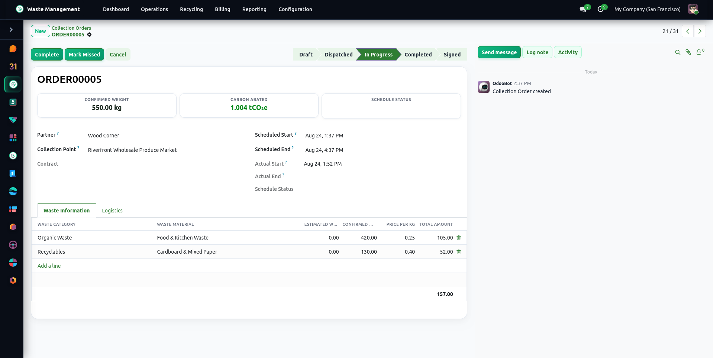
            <div style="padding:24px 30px;"><h4 style="font-size:20px; font-weight:700; color:#1A1B1D; margin:0 0 8px;"><span style="font-size:14px; font-weight:800; color:#82901F; margin-right:10px;">01</span>Category-Based Collection &amp; Weight Logging</h4><p style="color:#5C6066; margin:0; line-height:1.6; font-size:15px;">Record collected weight by waste category on each collection order, with customer signatures captured through secure token links and weight totals computed automatically.</p></div>
          </div>

          <div style="border:1px solid #E4E6E2; border-radius:20px; overflow:hidden; background-color:#FFFFFF; margin-bottom:40px;">
            <table cellpadding="0" cellspacing="0" border="0" style="width:100%; table-layout:fixed; border-collapse:collapse; background-color:#F7F8F6; border-bottom:1px solid #E4E6E2;"><tr>
              <td style="padding:14px 24px; vertical-align:middle; width:50%;"><span style="display:inline-block; width:10px; height:10px; border-radius:50%; background-color:#D0D3CD; margin-right:5px;"></span><span style="display:inline-block; width:10px; height:10px; border-radius:50%; background-color:#D0D3CD; margin-right:5px;"></span><span style="display:inline-block; width:10px; height:10px; border-radius:50%; background-color:#D0D3CD;"></span></td>
              <td style="padding:14px 24px; vertical-align:middle; width:50%; text-align:right; font-size:14px; font-weight:600; color:#5C6066;"><i class="fa fa-road" style="color:#82901F; margin-right:8px;"></i>Routing</td>
            </tr></table>
            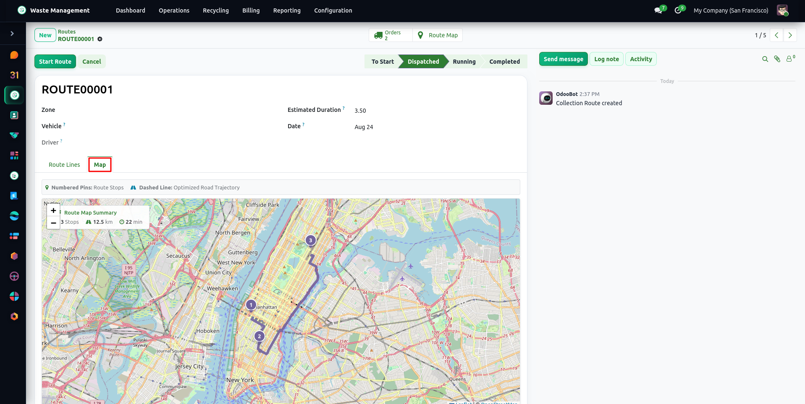
            <div style="padding:24px 30px;"><h4 style="font-size:20px; font-weight:700; color:#1A1B1D; margin:0 0 8px;"><span style="font-size:14px; font-weight:800; color:#82901F; margin-right:10px;">02</span>Interactive Leaflet Route Planning Map</h4><p style="color:#5C6066; margin:0; line-height:1.6; font-size:15px;">Build and sequence driver pickup routes on an interactive map interface with numbered stops, distance and duration estimates, and payload fill monitoring.</p></div>
          </div>

          <div style="border:1px solid #E4E6E2; border-radius:20px; overflow:hidden; background-color:#FFFFFF; margin-bottom:40px;">
            <table cellpadding="0" cellspacing="0" border="0" style="width:100%; table-layout:fixed; border-collapse:collapse; background-color:#F7F8F6; border-bottom:1px solid #E4E6E2;"><tr>
              <td style="padding:14px 24px; vertical-align:middle; width:50%;"><span style="display:inline-block; width:10px; height:10px; border-radius:50%; background-color:#D0D3CD; margin-right:5px;"></span><span style="display:inline-block; width:10px; height:10px; border-radius:50%; background-color:#D0D3CD; margin-right:5px;"></span><span style="display:inline-block; width:10px; height:10px; border-radius:50%; background-color:#D0D3CD;"></span></td>
              <td style="padding:14px 24px; vertical-align:middle; width:50%; text-align:right; font-size:14px; font-weight:600; color:#5C6066;"><i class="fa fa-bolt" style="color:#82901F; margin-right:8px;"></i>Optimization</td>
            </tr></table>
            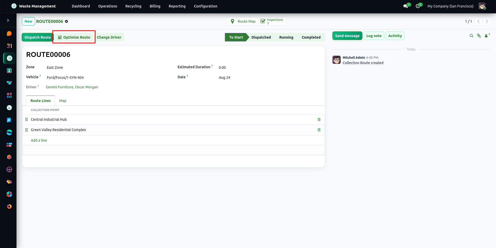
            <div style="padding:24px 30px;"><h4 style="font-size:20px; font-weight:700; color:#1A1B1D; margin:0 0 8px;"><span style="font-size:14px; font-weight:800; color:#82901F; margin-right:10px;">03</span>One-Click Route Distance &amp; Sequence Optimization</h4><p style="color:#5C6066; margin:0; line-height:1.6; font-size:15px;">Resequence pickup stops with a nearest-neighbour and 2-opt heuristic over straight-line (haversine) distances. It starts from the first stop and does not use live traffic or road distances.</p></div>
          </div>

          <div style="border:1px solid #E4E6E2; border-radius:20px; overflow:hidden; background-color:#FFFFFF; margin-bottom:40px;">
            <table cellpadding="0" cellspacing="0" border="0" style="width:100%; table-layout:fixed; border-collapse:collapse; background-color:#F7F8F6; border-bottom:1px solid #E4E6E2;"><tr>
              <td style="padding:14px 24px; vertical-align:middle; width:50%;"><span style="display:inline-block; width:10px; height:10px; border-radius:50%; background-color:#D0D3CD; margin-right:5px;"></span><span style="display:inline-block; width:10px; height:10px; border-radius:50%; background-color:#D0D3CD; margin-right:5px;"></span><span style="display:inline-block; width:10px; height:10px; border-radius:50%; background-color:#D0D3CD;"></span></td>
              <td style="padding:14px 24px; vertical-align:middle; width:50%; text-align:right; font-size:14px; font-weight:600; color:#5C6066;"><i class="fa fa-map-marker" style="color:#82901F; margin-right:8px;"></i>Service Zones</td>
            </tr></table>
            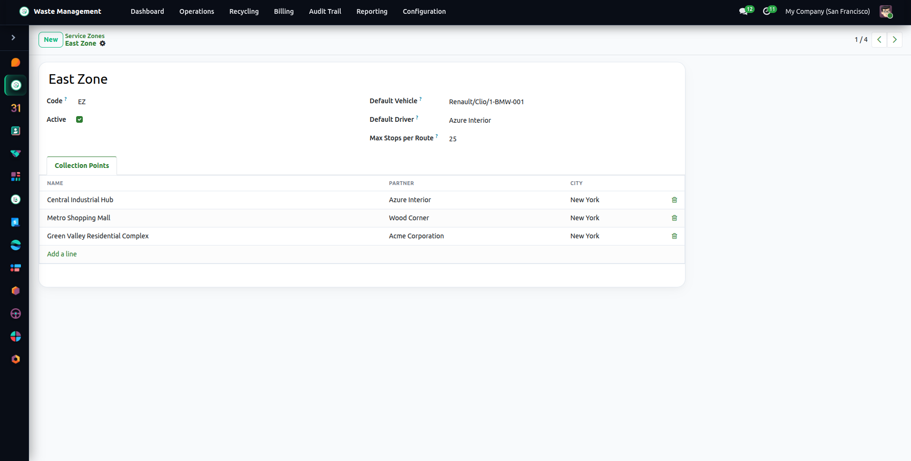
            <div style="padding:24px 30px;"><h4 style="font-size:20px; font-weight:700; color:#1A1B1D; margin:0 0 8px;"><span style="font-size:14px; font-weight:800; color:#82901F; margin-right:10px;">04</span>Service Zones &amp; Automatic Route Assignment</h4><p style="color:#5C6066; margin:0; line-height:1.6; font-size:15px;">Configure service zones with a default vehicle and driver and a maximum number of stops per route; when Service Zones &amp; Auto-Assignment is enabled in Settings, a daily scheduled action assigns draft orders to routes by zone (25 stops per route when no maximum is set).</p></div>
          </div>

          <div style="border:1px solid #E4E6E2; border-radius:20px; overflow:hidden; background-color:#FFFFFF; margin-bottom:40px;">
            <table cellpadding="0" cellspacing="0" border="0" style="width:100%; table-layout:fixed; border-collapse:collapse; background-color:#F7F8F6; border-bottom:1px solid #E4E6E2;"><tr>
              <td style="padding:14px 24px; vertical-align:middle; width:50%;"><span style="display:inline-block; width:10px; height:10px; border-radius:50%; background-color:#D0D3CD; margin-right:5px;"></span><span style="display:inline-block; width:10px; height:10px; border-radius:50%; background-color:#D0D3CD; margin-right:5px;"></span><span style="display:inline-block; width:10px; height:10px; border-radius:50%; background-color:#D0D3CD;"></span></td>
              <td style="padding:14px 24px; vertical-align:middle; width:50%; text-align:right; font-size:14px; font-weight:600; color:#5C6066;"><i class="fa fa-users" style="color:#82901F; margin-right:8px;"></i>Dispatch</td>
            </tr></table>
            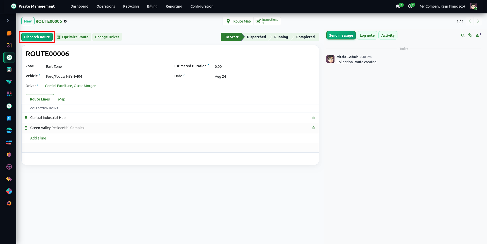
            <div style="padding:24px 30px;"><h4 style="font-size:20px; font-weight:700; color:#1A1B1D; margin:0 0 8px;"><span style="font-size:14px; font-weight:800; color:#82901F; margin-right:10px;">05</span>Unified Route Dispatch &amp; Shift Assignment</h4><p style="color:#5C6066; margin:0; line-height:1.6; font-size:15px;">Routes carry the vehicle, driver, and shift. Dispatching requires a passed pre-trip inspection, and a route cannot be completed while any of its orders is still pending.</p></div>
          </div>

          <div style="border:1px solid #E4E6E2; border-radius:20px; overflow:hidden; background-color:#FFFFFF; margin-bottom:40px;">
            <table cellpadding="0" cellspacing="0" border="0" style="width:100%; table-layout:fixed; border-collapse:collapse; background-color:#F7F8F6; border-bottom:1px solid #E4E6E2;"><tr>
              <td style="padding:14px 24px; vertical-align:middle; width:50%;"><span style="display:inline-block; width:10px; height:10px; border-radius:50%; background-color:#D0D3CD; margin-right:5px;"></span><span style="display:inline-block; width:10px; height:10px; border-radius:50%; background-color:#D0D3CD; margin-right:5px;"></span><span style="display:inline-block; width:10px; height:10px; border-radius:50%; background-color:#D0D3CD;"></span></td>
              <td style="padding:14px 24px; vertical-align:middle; width:50%; text-align:right; font-size:14px; font-weight:600; color:#5C6066;"><i class="fa fa-truck" style="color:#82901F; margin-right:8px;"></i>Fleet &amp; Safety</td>
            </tr></table>
            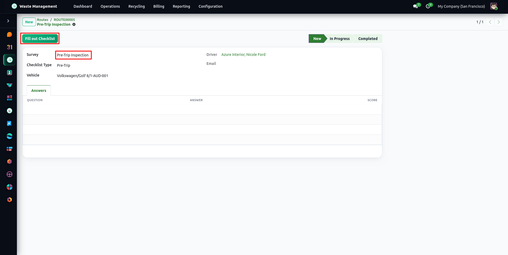
            <div style="padding:24px 30px;"><h4 style="font-size:20px; font-weight:700; color:#1A1B1D; margin:0 0 8px;"><span style="font-size:14px; font-weight:800; color:#82901F; margin-right:10px;">06</span>Vehicle Pre-Trip Safety &amp; Maintenance Checklists</h4><p style="color:#5C6066; margin:0; line-height:1.6; font-size:15px;">Pre-trip and post-trip inspection surveys, a vehicle maintenance checklist with history reporting, and a fleet expiry report for vehicle documents.</p></div>
          </div>

          <div style="border:1px solid #E4E6E2; border-radius:20px; overflow:hidden; background-color:#FFFFFF; margin-bottom:40px;">
            <table cellpadding="0" cellspacing="0" border="0" style="width:100%; table-layout:fixed; border-collapse:collapse; background-color:#F7F8F6; border-bottom:1px solid #E4E6E2;"><tr>
              <td style="padding:14px 24px; vertical-align:middle; width:50%;"><span style="display:inline-block; width:10px; height:10px; border-radius:50%; background-color:#D0D3CD; margin-right:5px;"></span><span style="display:inline-block; width:10px; height:10px; border-radius:50%; background-color:#D0D3CD; margin-right:5px;"></span><span style="display:inline-block; width:10px; height:10px; border-radius:50%; background-color:#D0D3CD;"></span></td>
              <td style="padding:14px 24px; vertical-align:middle; width:50%; text-align:right; font-size:14px; font-weight:600; color:#5C6066;"><i class="fa fa-map-pin" style="color:#82901F; margin-right:8px;"></i>Collection Points</td>
            </tr></table>
            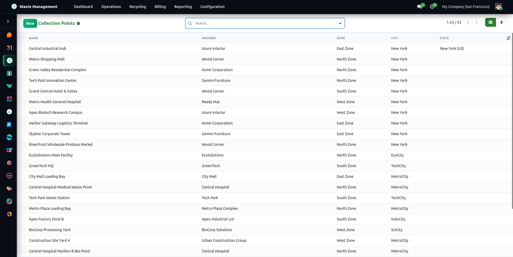
            <div style="padding:24px 30px;"><h4 style="font-size:20px; font-weight:700; color:#1A1B1D; margin:0 0 8px;"><span style="font-size:14px; font-weight:800; color:#82901F; margin-right:10px;">07</span>Geolocated Collection Points &amp; Container Assets</h4><p style="color:#5C6066; margin:0; line-height:1.6; font-size:15px;">Manage customer pickup locations with address, GPS coordinates, service zone, approved waste categories, and linked containers with rental rate and status.</p></div>
          </div>

          <div style="border:1px solid #E4E6E2; border-radius:20px; overflow:hidden; background-color:#FFFFFF; margin-bottom:40px;">
            <table cellpadding="0" cellspacing="0" border="0" style="width:100%; table-layout:fixed; border-collapse:collapse; background-color:#F7F8F6; border-bottom:1px solid #E4E6E2;"><tr>
              <td style="padding:14px 24px; vertical-align:middle; width:50%;"><span style="display:inline-block; width:10px; height:10px; border-radius:50%; background-color:#D0D3CD; margin-right:5px;"></span><span style="display:inline-block; width:10px; height:10px; border-radius:50%; background-color:#D0D3CD; margin-right:5px;"></span><span style="display:inline-block; width:10px; height:10px; border-radius:50%; background-color:#D0D3CD;"></span></td>
              <td style="padding:14px 24px; vertical-align:middle; width:50%; text-align:right; font-size:14px; font-weight:600; color:#5C6066;"><i class="fa fa-tags" style="color:#82901F; margin-right:8px;"></i>Batch Automation</td>
            </tr></table>
            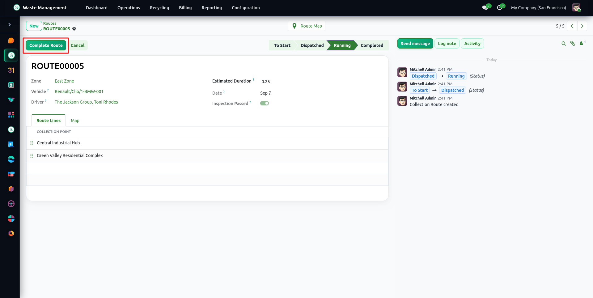
            <div style="padding:24px 30px;"><h4 style="font-size:20px; font-weight:700; color:#1A1B1D; margin:0 0 8px;"><span style="font-size:14px; font-weight:800; color:#82901F; margin-right:10px;">08</span>Automated Category-Level Waste Batch Generation</h4><p style="color:#5C6066; margin:0; line-height:1.6; font-size:15px;">Completing collection routes or standalone collection orders automatically generates or aggregates inbound Waste Batches grouped by waste stream category.</p></div>
          </div>

          <div style="border:1px solid #E4E6E2; border-radius:20px; overflow:hidden; background-color:#FFFFFF; margin-bottom:40px;">
            <table cellpadding="0" cellspacing="0" border="0" style="width:100%; table-layout:fixed; border-collapse:collapse; background-color:#F7F8F6; border-bottom:1px solid #E4E6E2;"><tr>
              <td style="padding:14px 24px; vertical-align:middle; width:50%;"><span style="display:inline-block; width:10px; height:10px; border-radius:50%; background-color:#D0D3CD; margin-right:5px;"></span><span style="display:inline-block; width:10px; height:10px; border-radius:50%; background-color:#D0D3CD; margin-right:5px;"></span><span style="display:inline-block; width:10px; height:10px; border-radius:50%; background-color:#D0D3CD;"></span></td>
              <td style="padding:14px 24px; vertical-align:middle; width:50%; text-align:right; font-size:14px; font-weight:600; color:#5C6066;"><i class="fa fa-tags" style="color:#82901F; margin-right:8px;"></i>Processing</td>
            </tr></table>
            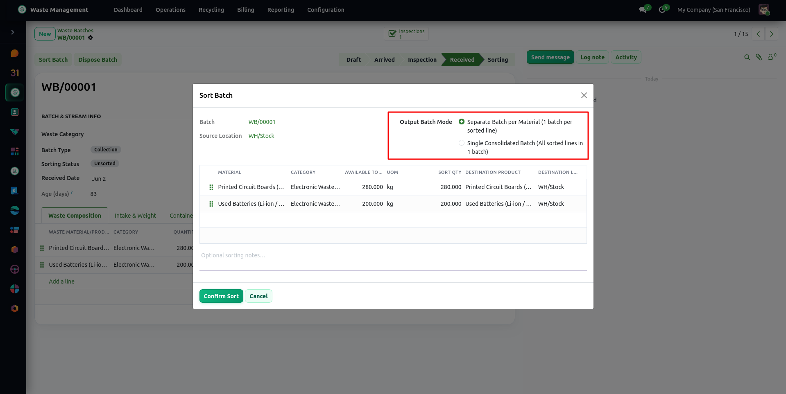
            <div style="padding:24px 30px;"><h4 style="font-size:20px; font-weight:700; color:#1A1B1D; margin:0 0 8px;"><span style="font-size:14px; font-weight:800; color:#82901F; margin-right:10px;">09</span>Guided Waste Batch Sorting Wizard</h4><p style="color:#5C6066; margin:0; line-height:1.6; font-size:15px;">Transform raw incoming waste batches into sorted recovery lines using a wizard that pre-fills quantities, destination products and locations from configured sorting rules.</p></div>
          </div>

          <div style="border:1px solid #E4E6E2; border-radius:20px; overflow:hidden; background-color:#FFFFFF; margin-bottom:40px;">
            <table cellpadding="0" cellspacing="0" border="0" style="width:100%; table-layout:fixed; border-collapse:collapse; background-color:#F7F8F6; border-bottom:1px solid #E4E6E2;"><tr>
              <td style="padding:14px 24px; vertical-align:middle; width:50%;"><span style="display:inline-block; width:10px; height:10px; border-radius:50%; background-color:#D0D3CD; margin-right:5px;"></span><span style="display:inline-block; width:10px; height:10px; border-radius:50%; background-color:#D0D3CD; margin-right:5px;"></span><span style="display:inline-block; width:10px; height:10px; border-radius:50%; background-color:#D0D3CD;"></span></td>
              <td style="padding:14px 24px; vertical-align:middle; width:50%; text-align:right; font-size:14px; font-weight:600; color:#5C6066;"><i class="fa fa-times-circle" style="color:#82901F; margin-right:8px;"></i>Missed Log</td>
            </tr></table>
            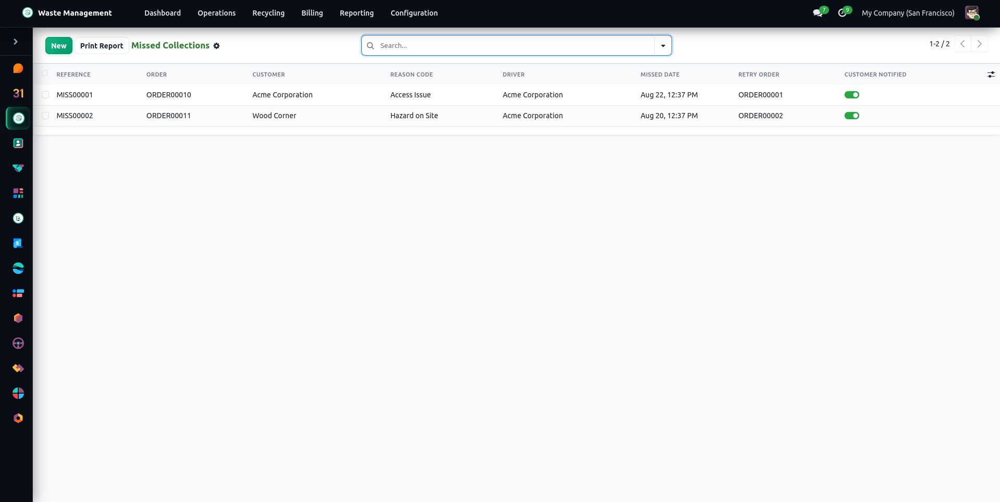
            <div style="padding:24px 30px;"><h4 style="font-size:20px; font-weight:700; color:#1A1B1D; margin:0 0 8px;"><span style="font-size:14px; font-weight:800; color:#82901F; margin-right:10px;">10</span>Missed Collection Logging &amp; Follow-up Tracking</h4><p style="color:#5C6066; margin:0; line-height:1.6; font-size:15px;">Log missed customer collections with root cause categorization, driver log notes, customer notifications, and automated reschedule triggers.</p></div>
          </div>

          <div style="border:1px solid #E4E6E2; border-radius:20px; overflow:hidden; background-color:#FFFFFF;">
            <table cellpadding="0" cellspacing="0" border="0" style="width:100%; table-layout:fixed; border-collapse:collapse; background-color:#F7F8F6; border-bottom:1px solid #E4E6E2;"><tr>
              <td style="padding:14px 24px; vertical-align:middle; width:50%;"><span style="display:inline-block; width:10px; height:10px; border-radius:50%; background-color:#D0D3CD; margin-right:5px;"></span><span style="display:inline-block; width:10px; height:10px; border-radius:50%; background-color:#D0D3CD; margin-right:5px;"></span><span style="display:inline-block; width:10px; height:10px; border-radius:50%; background-color:#D0D3CD;"></span></td>
              <td style="padding:14px 24px; vertical-align:middle; width:50%; text-align:right; font-size:14px; font-weight:600; color:#5C6066;"><i class="fa fa-line-chart" style="color:#82901F; margin-right:8px;"></i>Analytics</td>
            </tr></table>
            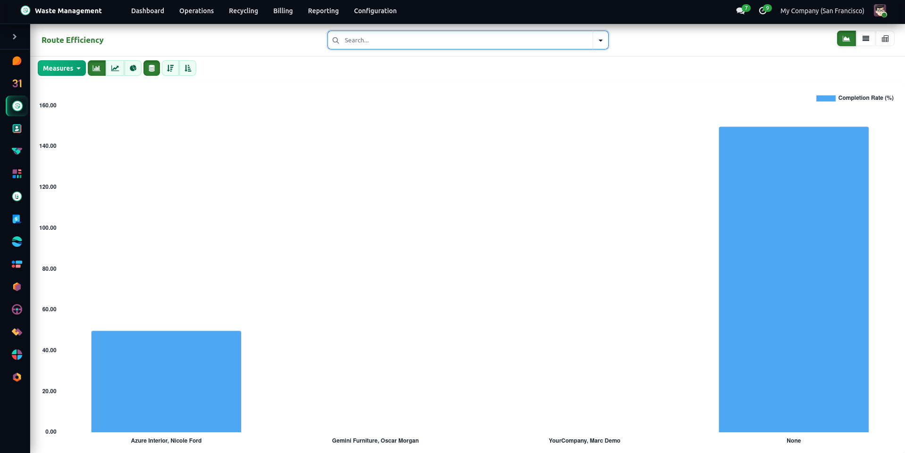
            <div style="padding:24px 30px;"><h4 style="font-size:20px; font-weight:700; color:#1A1B1D; margin:0 0 8px;"><span style="font-size:14px; font-weight:800; color:#82901F; margin-right:10px;">11</span>Fleet &amp; Route Efficiency Performance Analytics</h4><p style="color:#5C6066; margin:0; line-height:1.6; font-size:15px;">Report route distance and estimated duration, points planned versus orders completed, and per-driver completion and missed rates.</p></div>
          </div>

        </div></div>

        <!-- FEATURES -->
        <div class="tab-pane fade" id="wm-features" role="tabpanel" aria-labelledby="wm-features-tab"><div style="padding-top:1rem;"><table cellpadding="0" cellspacing="0" border="0" style="width:100%; table-layout:fixed; border-collapse:separate; border-spacing:10px;"><tr>
          <td style="width:50%; vertical-align:top; background-color:#F7F8F6; border:1px solid #E4E6E2; border-radius:14px; padding:22px; word-wrap:break-word;"><div style="font-weight:800; font-size:13px; letter-spacing:0.1em; color:#82901F; margin-bottom:10px;">01</div><h4 style="font-size:17px; font-weight:700; color:#1A1B1D; margin:0 0 8px;">On-Site Mobile Weight Logging</h4><p style="font-size:15px; color:#5C6066; margin:0; line-height:1.55;">Drivers log stop status and per-category weights from a phone or tablet (Driver App module), with customer signatures captured through secure token links.</p></td>
          <td style="width:50%; vertical-align:top; background-color:#F7F8F6; border:1px solid #E4E6E2; border-radius:14px; padding:22px; word-wrap:break-word;"><div style="font-weight:800; font-size:13px; letter-spacing:0.1em; color:#82901F; margin-bottom:10px;">02</div><h4 style="font-size:17px; font-weight:700; color:#1A1B1D; margin:0 0 8px;">Leaflet Interactive Routing</h4><p style="font-size:15px; color:#5C6066; margin:0; line-height:1.55;">Visual map interface rendering pickup stops, sequence numbers, and estimated distance and travel time.</p></td>
        </tr><tr>
          <td style="width:50%; vertical-align:top; background-color:#F7F8F6; border:1px solid #E4E6E2; border-radius:14px; padding:22px; word-wrap:break-word;"><div style="font-weight:800; font-size:13px; letter-spacing:0.1em; color:#82901F; margin-bottom:10px;">03</div><h4 style="font-size:17px; font-weight:700; color:#1A1B1D; margin:0 0 8px;">1-Click Route Optimization</h4><p style="font-size:15px; color:#5C6066; margin:0; line-height:1.55;">Nearest-neighbour and 2-opt stop sequencing over straight-line distances to shorten total route length.</p></td>
          <td style="width:50%; vertical-align:top; background-color:#F7F8F6; border:1px solid #E4E6E2; border-radius:14px; padding:22px; word-wrap:break-word;"><div style="font-weight:800; font-size:13px; letter-spacing:0.1em; color:#82901F; margin-bottom:10px;">04</div><h4 style="font-size:17px; font-weight:700; color:#1A1B1D; margin:0 0 8px;">Driver Shift &amp; Vehicle Allocation</h4><p style="font-size:15px; color:#5C6066; margin:0; line-height:1.55;">Driver shifts with hours driven, vehicle and driver assignment on routes, and a route fill level against vehicle payload capacity.</p></td>
        </tr><tr>
          <td style="width:50%; vertical-align:top; background-color:#F7F8F6; border:1px solid #E4E6E2; border-radius:14px; padding:22px; word-wrap:break-word;"><div style="font-weight:800; font-size:13px; letter-spacing:0.1em; color:#82901F; margin-bottom:10px;">05</div><h4 style="font-size:17px; font-weight:700; color:#1A1B1D; margin:0 0 8px;">Vehicle Safety Inspection Checklists</h4><p style="font-size:15px; color:#5C6066; margin:0; line-height:1.55;">Pre-trip and post-trip digital surveys recording roadworthiness and safety equipment, tied to the vehicle and route.</p></td>
          <td style="width:50%; vertical-align:top; background-color:#F7F8F6; border:1px solid #E4E6E2; border-radius:14px; padding:22px; word-wrap:break-word;"><div style="font-weight:800; font-size:13px; letter-spacing:0.1em; color:#82901F; margin-bottom:10px;">06</div><h4 style="font-size:17px; font-weight:700; color:#1A1B1D; margin:0 0 8px;">Geolocated Collection Points</h4><p style="font-size:15px; color:#5C6066; margin:0; line-height:1.55;">Track partner pickup locations with GPS coordinates, container assets, and recurring route schedules.</p></td>
        </tr><tr>
          <td style="width:50%; vertical-align:top; background-color:#F7F8F6; border:1px solid #E4E6E2; border-radius:14px; padding:22px; word-wrap:break-word;"><div style="font-weight:800; font-size:13px; letter-spacing:0.1em; color:#82901F; margin-bottom:10px;">07</div><h4 style="font-size:17px; font-weight:700; color:#1A1B1D; margin:0 0 8px;">Guided Batch Sorting Wizard</h4><p style="font-size:15px; color:#5C6066; margin:0; line-height:1.55;">Transform mixed waste loads into secondary recyclable commodity lines with destination products and locations pre-filled from configured sorting rules.</p></td>
          <td style="width:50%; vertical-align:top; background-color:#F7F8F6; border:1px solid #E4E6E2; border-radius:14px; padding:22px; word-wrap:break-word;"><div style="font-weight:800; font-size:13px; letter-spacing:0.1em; color:#82901F; margin-bottom:10px;">08</div><h4 style="font-size:17px; font-weight:700; color:#1A1B1D; margin:0 0 8px;">Missed Collection Tracking</h4><p style="font-size:15px; color:#5C6066; margin:0; line-height:1.55;">Log missed collections with a reason, notify the customer by email, and create a next-day retry order automatically.</p></td>
        </tr><tr>
          <td style="width:50%; vertical-align:top; background-color:#F7F8F6; border:1px solid #E4E6E2; border-radius:14px; padding:22px; word-wrap:break-word;"><div style="font-weight:800; font-size:13px; letter-spacing:0.1em; color:#82901F; margin-bottom:10px;">09</div><h4 style="font-size:17px; font-weight:700; color:#1A1B1D; margin:0 0 8px;">Facility Gate Entry &amp; Weighbridge</h4><p style="font-size:15px; color:#5C6066; margin:0; line-height:1.55;">Confirm the payload weight received at the gate, with load variance reconciliation against the order's weight, and rejection logging.</p></td>
          <td style="width:50%; vertical-align:top; background-color:#F7F8F6; border:1px solid #E4E6E2; border-radius:14px; padding:22px; word-wrap:break-word;"><div style="font-weight:800; font-size:13px; letter-spacing:0.1em; color:#82901F; margin-bottom:10px;">10</div><h4 style="font-size:17px; font-weight:700; color:#1A1B1D; margin:0 0 8px;">Physical Container Asset Tracking</h4><p style="font-size:15px; color:#5C6066; margin:0; line-height:1.55;">Manage individual bin and dumpster assets with serial numbers, barcodes, RFID tags, deployment lifecycle states, and rental charges.</p></td>
        </tr><tr>
          <td style="width:50%; vertical-align:top; background-color:#F7F8F6; border:1px solid #E4E6E2; border-radius:14px; padding:22px; word-wrap:break-word;"><div style="font-weight:800; font-size:13px; letter-spacing:0.1em; color:#82901F; margin-bottom:10px;">11</div><h4 style="font-size:17px; font-weight:700; color:#1A1B1D; margin:0 0 8px;">Order Status Progression &amp; Audit Logs</h4><p style="font-size:15px; color:#5C6066; margin:0; line-height:1.55;">Timestamped driver stop-status log, driver notes, and chatter tracking of order state changes.</p></td>
          <td style="width:50%; vertical-align:top; background-color:#F7F8F6; border:1px solid #E4E6E2; border-radius:14px; padding:22px; word-wrap:break-word;"><div style="font-weight:800; font-size:13px; letter-spacing:0.1em; color:#82901F; margin-bottom:10px;">12</div><h4 style="font-size:17px; font-weight:700; color:#1A1B1D; margin:0 0 8px;">Automated Shift &amp; Route Planning</h4><p style="font-size:15px; color:#5C6066; margin:0; line-height:1.55;">A driver shift is created automatically (or the open one reused) when a route is started and closed when the route is completed, tracking hours driven.</p></td>
        </tr></table></div></div>

        <!-- FAQs -->
        <div class="tab-pane fade" id="wm-faqs" role="tabpanel" aria-labelledby="wm-faqs-tab"><div style="padding-top:1rem; max-width:900px; margin:0 auto;"><details style="background:#F7F8F6;border-radius:16px;margin-bottom:10px;border:1px solid #E4E6E2;overflow:hidden"><summary style="padding:18px 26px;font-weight:600;font-size:1rem;color:#1A1B1D;cursor:pointer;list-style:none">Do drivers need dedicated mobile hardware or proprietary barcode scanners?</summary><div style="padding:0 26px 18px;color:#5C6066;line-height:1.6">No. Drivers use the Driver App (a progressive web app in the separate wm_driver_app module) and the signing page in a standard mobile browser on smartphones and tablets.</div></details><details style="background:#F7F8F6;border-radius:16px;margin-bottom:10px;border:1px solid #E4E6E2;overflow:hidden"><summary style="padding:18px 26px;font-weight:600;font-size:1rem;color:#1A1B1D;cursor:pointer;list-style:none">How does the 1-Click Route Optimization algorithm work?</summary><div style="padding:0 26px 18px;color:#5C6066;line-height:1.6">It builds a straight-line (haversine) distance matrix between stop coordinates, orders stops with a nearest-neighbour pass starting from the first stop, then improves the order with 2-opt swaps. Road distances and traffic are not used for ordering.</div></details><details style="background:#F7F8F6;border-radius:16px;margin-bottom:10px;border:1px solid #E4E6E2;overflow:hidden"><summary style="padding:18px 26px;font-weight:600;font-size:1rem;color:#1A1B1D;cursor:pointer;list-style:none">What happens when a driver encounters an inaccessible bin or customer lockout?</summary><div style="padding:0 26px 18px;color:#5C6066;line-height:1.6">The driver logs a "Missed Collection" selecting the reason (for example Access Issue, Bin Not Out, Hazard on Site, Vehicle Breakdown). With Missed Collections enabled in Settings, the customer is notified by email and a retry order is created for the next day.</div></details><details style="background:#F7F8F6;border-radius:16px;margin-bottom:10px;border:1px solid #E4E6E2;overflow:hidden"><summary style="padding:18px 26px;font-weight:600;font-size:1rem;color:#1A1B1D;cursor:pointer;list-style:none">Can vehicle safety surveys block dispatch if critical issues are found?</summary><div style="padding:0 26px 18px;color:#5C6066;line-height:1.6">Yes. A route cannot be dispatched until its vehicle has passed a pre-trip inspection (survey or checked pre-trip maintenance checklist). If the latest pre-trip survey is not passed, dispatch is blocked.</div></details></div></div>

        <!-- RELEASES -->
        <div class="tab-pane fade" id="wm-releases" role="tabpanel" aria-labelledby="wm-releases-tab"><div style="padding-top:1rem;">
          <div style="max-width:680px; margin:0 auto 20px; background-color:#FFFFFF; border:1px solid #E4E6E2; border-radius:14px; padding:26px;"><table cellpadding="0" cellspacing="0" border="0" style="width:100%; table-layout:fixed; border-collapse:collapse; margin-bottom:16px;"><tr><td style="vertical-align:middle; width:60%;"><span style="font-size:20px; font-weight:800; color:#1A1B1D; margin-right:10px;">19.0.1.0.2</span><span style="font-size:11px; font-weight:800; letter-spacing:0.08em; text-transform:uppercase; padding:4px 12px; border-radius:20px; background-color:#F7F9EC; color:#82901F; border:1px solid #E2E8B8; display:inline-block;">Updt</span></td><td style="vertical-align:middle; width:40%; text-align:right; font-size:14px; color:#8B9099; font-weight:600;"><i class="fa fa-calendar-o" style="margin-right:7px;"></i>12th October, 2026</td></tr></table><div style="padding:16px 18px; background-color:#F7F8F6; border:1px solid #E4E6E2; border-radius:10px; color:#5C6066; font-size:15px; line-height:1.55;">Updt: Added weighbridge gate entry management, container RFID/barcode tracking, status audit logs, and automatic driver shift creation. Tightened record rules: drivers only reach their own status logs, missed collections and signatures; read access is limited to the Waste Management roles. Added multi-company rules for batch lines and gate entry lines. Moved the delete guards to ondelete methods and fixed the inheritable defaults of waste batches.</div></div>
          <div style="max-width:680px; margin:0 auto 20px; background-color:#FFFFFF; border:1px solid #E4E6E2; border-radius:14px; padding:26px;"><table cellpadding="0" cellspacing="0" border="0" style="width:100%; table-layout:fixed; border-collapse:collapse; margin-bottom:16px;"><tr><td style="vertical-align:middle; width:60%;"><span style="font-size:20px; font-weight:800; color:#1A1B1D; margin-right:10px;">19.0.1.0.1</span><span style="font-size:11px; font-weight:800; letter-spacing:0.08em; text-transform:uppercase; padding:4px 12px; border-radius:20px; background-color:#F7F9EC; color:#82901F; border:1px solid #E2E8B8; display:inline-block;">Updt</span></td><td style="vertical-align:middle; width:40%; text-align:right; font-size:14px; color:#8B9099; font-weight:600;"><i class="fa fa-calendar-o" style="margin-right:7px;"></i>23rd September, 2026</td></tr></table><div style="padding:16px 18px; background-color:#F7F8F6; border:1px solid #E4E6E2; border-radius:10px; color:#5C6066; font-size:15px; line-height:1.55;">Updt: Updated the index page.</div></div>
<div style="max-width:680px; margin:0 auto; background-color:#FFFFFF; border:1px solid #E4E6E2; border-radius:14px; padding:26px;"><table cellpadding="0" cellspacing="0" border="0" style="width:100%; table-layout:fixed; border-collapse:collapse; margin-bottom:16px;"><tr><td style="vertical-align:middle; width:60%;"><span style="font-size:20px; font-weight:800; color:#1A1B1D; margin-right:10px;">19.0.1.0.0</span><span style="font-size:11px; font-weight:800; letter-spacing:0.08em; text-transform:uppercase; padding:4px 12px; border-radius:20px; background-color:#EDF4F0; color:#2F6B4F; border:1px solid #D7E7DE; display:inline-block;">Add</span></td><td style="vertical-align:middle; width:40%; text-align:right; font-size:14px; color:#8B9099; font-weight:600;"><i class="fa fa-calendar-o" style="margin-right:7px;"></i>19th August, 2026</td></tr></table><div style="padding:16px 18px; background-color:#F7F8F6; border:1px solid #E4E6E2; border-radius:10px; color:#5C6066; font-size:15px; line-height:1.55;">Add: Initial release of Waste Management Collection, Fleet Routing, Leaflet Map Integration &amp; Safety Checklists.</div></div></div></div>

      </div>
    </div>


    <!-- ============ THE ECOSYSTEM ============ -->
    <div style="background-color:#FFFFFF; border:1px solid #E4E6E2; border-radius:20px; padding:48px 36px; margin-bottom:32px;">
      <div style="text-align:center; margin-bottom:36px;">
        <p style="font-size:12px; font-weight:800; letter-spacing:0.18em; text-transform:uppercase; color:#82901F; margin:0 0 12px;">The Ecosystem</p>
        <h2 style="font-size:32px; font-weight:800; color:#1A1B1D; margin:0 0 12px; line-height:1.2;">Explore the Waste Management Suite</h2>
        <p style="font-size:17px; color:#5C6066; max-width:720px; margin:0 auto; line-height:1.6;">A modular, fully integrated software suite tailored for modern environmental and waste management enterprises.</p>
      </div>

      <!-- Row 1: 4 Modules -->
      <table cellpadding="0" cellspacing="0" border="0" style="width:100%; table-layout:fixed; border-collapse:separate; border-spacing:10px; margin-bottom:0;">
        <tr>
          <td style="width:25%; vertical-align:top; background-color:#F7F8F6; border:1px solid #E4E6E2; border-radius:14px; padding:20px; word-wrap:break-word;">
            <a href="https://apps.odoo.com/apps/modules/19.0/wm_base" target="_blank" style="text-decoration:none; color:#1A1B1D; display:block;">
              <span style="display:inline-block; width:44px; height:44px; line-height:44px; text-align:center; border-radius:12px; background-color:#FFFFFF; color:#82901F; border:1px solid #E4E6E2; margin-bottom:14px;"><i class="fa fa-database" style="font-size:19px;"></i></span>
              <h4 style="font-size:16px; font-weight:700; color:#1A1B1D; margin:0 0 8px;">WM Base</h4>
              <p style="font-size:13px; color:#5C6066; margin:0; line-height:1.5;">Core infrastructure, stream taxonomy, container asset registry, and digital signatures.</p>
            </a>
          </td>
          <td style="width:25%; vertical-align:top; background-color:#F7F8F6; border:1px solid #E4E6E2; border-radius:14px; padding:20px; word-wrap:break-word;">
            <a href="https://apps.odoo.com/apps/modules/19.0/wm_collection" target="_blank" style="text-decoration:none; color:#1A1B1D; display:block;">
              <span style="display:inline-block; width:44px; height:44px; line-height:44px; text-align:center; border-radius:12px; background-color:#FFFFFF; color:#82901F; border:1px solid #E4E6E2; margin-bottom:14px;"><i class="fa fa-truck" style="font-size:19px;"></i></span>
              <h4 style="font-size:16px; font-weight:700; color:#1A1B1D; margin:0 0 8px;">WM Collection</h4>
              <p style="font-size:13px; color:#5C6066; margin:0; line-height:1.5;">Collection orders, route planning with map sequencing, driver shifts, vehicle checklists, missed collections, and waste batches.</p>
            </a>
          </td>
          <td style="width:25%; vertical-align:top; background-color:#F7F8F6; border:1px solid #E4E6E2; border-radius:14px; padding:20px; word-wrap:break-word;">
            <a href="https://apps.odoo.com/apps/modules/19.0/wm_compliance" target="_blank" style="text-decoration:none; color:#1A1B1D; display:block;">
              <span style="display:inline-block; width:44px; height:44px; line-height:44px; text-align:center; border-radius:12px; background-color:#FFFFFF; color:#82901F; border:1px solid #E4E6E2; margin-bottom:14px;"><i class="fa fa-shield" style="font-size:19px;"></i></span>
              <h4 style="font-size:16px; font-weight:700; color:#1A1B1D; margin:0 0 8px;">WM Compliance</h4>
              <p style="font-size:13px; color:#5C6066; margin:0; line-height:1.5;">Hazardous waste manifests, EPA / EWC codes, chain of custody, and regulatory reporting.</p>
            </a>
          </td>
          <td style="width:25%; vertical-align:top; background-color:#F7F8F6; border:1px solid #E4E6E2; border-radius:14px; padding:20px; word-wrap:break-word;">
            <a href="https://apps.odoo.com/apps/modules/19.0/wm_contracts_billing" target="_blank" style="text-decoration:none; color:#1A1B1D; display:block;">
              <span style="display:inline-block; width:44px; height:44px; line-height:44px; text-align:center; border-radius:12px; background-color:#FFFFFF; color:#82901F; border:1px solid #E4E6E2; margin-bottom:14px;"><i class="fa fa-building-o" style="font-size:19px;"></i></span>
              <h4 style="font-size:16px; font-weight:700; color:#1A1B1D; margin:0 0 8px;">WM Contracts &amp; Billing</h4>
              <p style="font-size:13px; color:#5C6066; margin:0; line-height:1.5;">Recurring service contracts, dynamic rate cards, container rentals, and automated billing runs.</p>
            </a>
          </td>
        </tr>
      </table>

      <!-- Row 2: 3 Modules -->
      <table cellpadding="0" cellspacing="0" border="0" style="width:100%; table-layout:fixed; border-collapse:separate; border-spacing:10px; margin-top:0;">
        <tr>
          <td style="width:33.33%; vertical-align:top; background-color:#F7F8F6; border:1px solid #E4E6E2; border-radius:14px; padding:20px; word-wrap:break-word;">
            <a href="https://apps.odoo.com/apps/modules/19.0/wm_recycling" target="_blank" style="text-decoration:none; color:#1A1B1D; display:block;">
              <span style="display:inline-block; width:44px; height:44px; line-height:44px; text-align:center; border-radius:12px; background-color:#FFFFFF; color:#82901F; border:1px solid #E4E6E2; margin-bottom:14px;"><i class="fa fa-refresh" style="font-size:19px;"></i></span>
              <h4 style="font-size:16px; font-weight:700; color:#1A1B1D; margin:0 0 8px;">WM Recycling &amp; MRF</h4>
              <p style="font-size:13px; color:#5C6066; margin:0; line-height:1.5;">Material recovery facilities, batch sorting wizards, stock moves, and EPA WARM carbon accounting.</p>
            </a>
          </td>
          <td style="width:33.33%; vertical-align:top; background-color:#F7F8F6; border:1px solid #E4E6E2; border-radius:14px; padding:20px; word-wrap:break-word;">
            <a href="https://apps.odoo.com/apps/modules/19.0/wm_subscription" target="_blank" style="text-decoration:none; color:#1A1B1D; display:block;">
              <span style="display:inline-block; width:44px; height:44px; line-height:44px; text-align:center; border-radius:12px; background-color:#FFFFFF; color:#82901F; border:1px solid #E4E6E2; margin-bottom:14px;"><i class="fa fa-repeat" style="font-size:19px;"></i></span>
              <h4 style="font-size:16px; font-weight:700; color:#1A1B1D; margin:0 0 8px;">WM Subscriptions</h4>
              <p style="font-size:13px; color:#5C6066; margin:0; line-height:1.5;">Recurring plans, weight quota limits, subscriber benefits, and portal customer self-service.</p>
            </a>
          </td>
          <td style="width:33.33%; vertical-align:top; background-color:#F7F8F6; border:1px solid #E4E6E2; border-radius:14px; padding:20px; word-wrap:break-word;">
            <a href="https://apps.odoo.com/apps/modules/19.0/wm_driver_app" target="_blank" style="text-decoration:none; color:#1A1B1D; display:block;">
              <span style="display:inline-block; width:44px; height:44px; line-height:44px; text-align:center; border-radius:12px; background-color:#FFFFFF; color:#82901F; border:1px solid #E4E6E2; margin-bottom:14px;"><i class="fa fa-mobile" style="font-size:19px;"></i></span>
              <h4 style="font-size:16px; font-weight:700; color:#1A1B1D; margin:0 0 8px;">WM Driver App (PWA)</h4>
              <p style="font-size:13px; color:#5C6066; margin:0; line-height:1.5;">Offline-first mobile PWA for collection drivers with GPS stamps, stop completion, and photo proof.</p>
            </a>
          </td>
        </tr>
      </table>
    </div>

    <!-- ============ RELATED MODULES ============ -->
    <div style="margin-bottom:32px;">
      <div style="margin-bottom:28px;">
        <p style="font-size:12px; font-weight:800; letter-spacing:0.18em; text-transform:uppercase; color:#82901F; margin:0 0 10px;">Related Modules</p>
        <h2 style="font-size:30px; font-weight:800; color:#1A1B1D; margin:0; line-height:1.2;">More from Cybrosys</h2>
      </div>

      <table cellpadding="0" cellspacing="0" border="0" style="width:100%; table-layout:fixed; border-collapse:separate; border-spacing:10px;">
        <tr>
          <td style="width:33.33%; vertical-align:top; background-color:#FFFFFF; border:1px solid #E4E6E2; border-radius:14px; padding:0; word-wrap:break-word;">
            <a href="https://apps.odoo.com/apps/modules/19.0/base_account_budget" target="_blank" style="text-decoration:none; color:#1A1B1D; display:block;">
              
              <div style="padding:16px 18px; border-top:1px solid #E4E6E2;">
                <h4 style="font-size:15px; font-weight:700; color:#1A1B1D; margin:0;">Odoo 19 Budget Management <i class="fa fa-arrow-right" style="font-size:13px; color:#82901F; margin-left:4px;"></i></h4>
              </div>
            </a>
          </td>
          <td style="width:33.33%; vertical-align:top; background-color:#FFFFFF; border:1px solid #E4E6E2; border-radius:14px; padding:0; word-wrap:break-word;">
            <a href="https://apps.odoo.com/apps/modules/19.0/invoice_design" target="_blank" style="text-decoration:none; color:#1A1B1D; display:block;">
              
              <div style="padding:16px 18px; border-top:1px solid #E4E6E2;">
                <h4 style="font-size:15px; font-weight:700; color:#1A1B1D; margin:0;">Custom Design For Invoices <i class="fa fa-arrow-right" style="font-size:13px; color:#82901F; margin-left:4px;"></i></h4>
              </div>
            </a>
          </td>
          <td style="width:33.33%; vertical-align:top; background-color:#FFFFFF; border:1px solid #E4E6E2; border-radius:14px; padding:0; word-wrap:break-word;">
            <a href="https://apps.odoo.com/apps/modules/19.0/hide_menu_user" target="_blank" style="text-decoration:none; color:#1A1B1D; display:block;">
              
              <div style="padding:16px 18px; border-top:1px solid #E4E6E2;">
                <h4 style="font-size:15px; font-weight:700; color:#1A1B1D; margin:0;">Hide Any Menu User Wise <i class="fa fa-arrow-right" style="font-size:13px; color:#82901F; margin-left:4px;"></i></h4>
              </div>
            </a>
          </td>
        </tr>
        <tr>
          <td style="width:33.33%; vertical-align:top; background-color:#FFFFFF; border:1px solid #E4E6E2; border-radius:14px; padding:0; word-wrap:break-word;">
            <a href="https://apps.odoo.com/apps/modules/19.0/access_roles" target="_blank" style="text-decoration:none; color:#1A1B1D; display:block;">
              
              <div style="padding:16px 18px; border-top:1px solid #E4E6E2;">
                <h4 style="font-size:15px; font-weight:700; color:#1A1B1D; margin:0;">Access Roles <i class="fa fa-arrow-right" style="font-size:13px; color:#82901F; margin-left:4px;"></i></h4>
              </div>
            </a>
          </td>
          <td style="width:33.33%; vertical-align:top; background-color:#FFFFFF; border:1px solid #E4E6E2; border-radius:14px; padding:0; word-wrap:break-word;">
            <a href="https://apps.odoo.com/apps/modules/19.0/login_as_any_user" target="_blank" style="text-decoration:none; color:#1A1B1D; display:block;">
              
              <div style="padding:16px 18px; border-top:1px solid #E4E6E2;">
                <h4 style="font-size:15px; font-weight:700; color:#1A1B1D; margin:0;">Login As Any User <i class="fa fa-arrow-right" style="font-size:13px; color:#82901F; margin-left:4px;"></i></h4>
              </div>
            </a>
          </td>
          <td style="width:33.33%; vertical-align:top; background-color:#FFFFFF; border:1px solid #E4E6E2; border-radius:14px; padding:0; word-wrap:break-word;">
            <a href="https://apps.odoo.com/apps/modules/19.0/low_stocks_product_alert" target="_blank" style="text-decoration:none; color:#1A1B1D; display:block;">
              
              <div style="padding:16px 18px; border-top:1px solid #E4E6E2;">
                <h4 style="font-size:15px; font-weight:700; color:#1A1B1D; margin:0;">Product Low Stock Alert <i class="fa fa-arrow-right" style="font-size:13px; color:#82901F; margin-left:4px;"></i></h4>
              </div>
            </a>
          </td>
        </tr>
      </table>
    </div>

    <!-- ============ SERVICES ============ -->
    <div style="background-color:#FFFFFF; border:1px solid #E4E6E2; border-radius:20px; padding:44px 36px; margin-bottom:32px;">
      <div style="text-align:center; margin-bottom:32px;">
        <p style="font-size:12px; font-weight:800; letter-spacing:0.18em; text-transform:uppercase; color:#82901F; margin:0 0 12px;">Professional Support</p>
        <h2 style="font-size:32px; font-weight:800; color:#1A1B1D; margin:0; line-height:1.2;">Our Expert Services</h2>
      </div>

      <table cellpadding="0" cellspacing="0" border="0" style="width:100%; table-layout:fixed; border-collapse:separate; border-spacing:10px;">
        <tr>
          <td style="width:25%; vertical-align:middle; background-color:#F7F8F6; border:1px solid #E4E6E2; border-radius:14px; padding:18px; text-align:center; word-wrap:break-word;">
            <a href="https://www.cybrosys.com/odoo-customization-and-installation" target="_blank" style="text-decoration:none; color:#1A1B1D; display:block;">
              <span style="display:inline-block; width:40px; height:40px; line-height:40px; text-align:center; border-radius:12px; background-color:#FFFFFF; border:1px solid #E4E6E2; color:#82901F; margin-bottom:10px;"><i class="fa fa-cogs" style="font-size:17px;"></i></span>
              <h3 style="font-size:15px; font-weight:700; color:#1A1B1D; margin:0;">Odoo customization</h3>
            </a>
          </td>
          <td style="width:25%; vertical-align:middle; background-color:#F7F8F6; border:1px solid #E4E6E2; border-radius:14px; padding:18px; text-align:center; word-wrap:break-word;">
            <a href="https://www.cybrosys.com/odoo-erp-implementation" target="_blank" style="text-decoration:none; color:#1A1B1D; display:block;">
              <span style="display:inline-block; width:40px; height:40px; line-height:40px; text-align:center; border-radius:12px; background-color:#FFFFFF; border:1px solid #E4E6E2; color:#82901F; margin-bottom:10px;"><i class="fa fa-rocket" style="font-size:17px;"></i></span>
              <h3 style="font-size:15px; font-weight:700; color:#1A1B1D; margin:0;">Odoo implementation</h3>
            </a>
          </td>
          <td style="width:25%; vertical-align:middle; background-color:#F7F8F6; border:1px solid #E4E6E2; border-radius:14px; padding:18px; text-align:center; word-wrap:break-word;">
            <a href="https://www.cybrosys.com/odoo-erp-support" target="_blank" style="text-decoration:none; color:#1A1B1D; display:block;">
              <span style="display:inline-block; width:40px; height:40px; line-height:40px; text-align:center; border-radius:12px; background-color:#FFFFFF; border:1px solid #E4E6E2; color:#82901F; margin-bottom:10px;"><i class="fa fa-life-ring" style="font-size:17px;"></i></span>
              <h3 style="font-size:15px; font-weight:700; color:#1A1B1D; margin:0;">Odoo support</h3>
            </a>
          </td>
          <td style="width:25%; vertical-align:middle; background-color:#F7F8F6; border:1px solid #E4E6E2; border-radius:14px; padding:18px; text-align:center; word-wrap:break-word;">
            <a href="https://www.cybrosys.com/odoo-migration-service" target="_blank" style="text-decoration:none; color:#1A1B1D; display:block;">
              <span style="display:inline-block; width:40px; height:40px; line-height:40px; text-align:center; border-radius:12px; background-color:#FFFFFF; border:1px solid #E4E6E2; color:#82901F; margin-bottom:10px;"><i class="fa fa-exchange" style="font-size:17px;"></i></span>
              <h3 style="font-size:15px; font-weight:700; color:#1A1B1D; margin:0;">Odoo migration</h3>
            </a>
          </td>
        </tr>
        <tr>
          <td style="width:25%; vertical-align:middle; background-color:#F7F8F6; border:1px solid #E4E6E2; border-radius:14px; padding:18px; text-align:center; word-wrap:break-word;">
            <a href="https://www.cybrosys.com/odoo-erp-integration" target="_blank" style="text-decoration:none; color:#1A1B1D; display:block;">
              <span style="display:inline-block; width:40px; height:40px; line-height:40px; text-align:center; border-radius:12px; background-color:#FFFFFF; border:1px solid #E4E6E2; color:#82901F; margin-bottom:10px;"><i class="fa fa-plug" style="font-size:17px;"></i></span>
              <h3 style="font-size:15px; font-weight:700; color:#1A1B1D; margin:0;">Odoo integration</h3>
            </a>
          </td>
          <td style="width:25%; vertical-align:middle; background-color:#F7F8F6; border:1px solid #E4E6E2; border-radius:14px; padding:18px; text-align:center; word-wrap:break-word;">
            <a href="https://www.cybrosys.com/odoo-consultancy" target="_blank" style="text-decoration:none; color:#1A1B1D; display:block;">
              <span style="display:inline-block; width:40px; height:40px; line-height:40px; text-align:center; border-radius:12px; background-color:#FFFFFF; border:1px solid #E4E6E2; color:#82901F; margin-bottom:10px;"><i class="fa fa-comments-o" style="font-size:17px;"></i></span>
              <h3 style="font-size:15px; font-weight:700; color:#1A1B1D; margin:0;">Odoo consultancy</h3>
            </a>
          </td>
          <td style="width:25%; vertical-align:middle; background-color:#F7F8F6; border:1px solid #E4E6E2; border-radius:14px; padding:18px; text-align:center; word-wrap:break-word;">
            <a href="https://www.cybrosys.com/odoo-licensing-consultancy" target="_blank" style="text-decoration:none; color:#1A1B1D; display:block;">
              <span style="display:inline-block; width:40px; height:40px; line-height:40px; text-align:center; border-radius:12px; background-color:#FFFFFF; border:1px solid #E4E6E2; color:#82901F; margin-bottom:10px;"><i class="fa fa-certificate" style="font-size:17px;"></i></span>
              <h3 style="font-size:15px; font-weight:700; color:#1A1B1D; margin:0;">Odoo licensing</h3>
            </a>
          </td>
          <td style="width:25%; vertical-align:middle; background-color:#F7F8F6; border:1px solid #E4E6E2; border-radius:14px; padding:18px; text-align:center; word-wrap:break-word;">
            <a href="https://www.cybrosys.com/hire-odoo-developer" target="_blank" style="text-decoration:none; color:#1A1B1D; display:block;">
              <span style="display:inline-block; width:40px; height:40px; line-height:40px; text-align:center; border-radius:12px; background-color:#FFFFFF; border:1px solid #E4E6E2; color:#82901F; margin-bottom:10px;"><i class="fa fa-user-plus" style="font-size:17px;"></i></span>
              <h3 style="font-size:15px; font-weight:700; color:#1A1B1D; margin:0;">Hire Odoo developer</h3>
            </a>
          </td>
        </tr>
      </table>
    </div>

    <!-- ============ CLOSING CTA BANNER ============ -->
    <div style="background-color:#1A1B1D; border-radius:20px; padding:52px 36px; text-align:center;">
      <h2 style="font-size:32px; font-weight:800; color:#FFFFFF; margin:0 0 14px; line-height:1.2;">Empower Your Collection Fleet in Odoo 19</h2>
      <p style="color:#C9CBC6; margin:0 auto 28px; max-width:640px; font-size:17px; line-height:1.6;">Ready to optimize your collection routes, driver dispatch, and field weight logging? Let's discuss your deployment.</p>
      <div>
        <a href="mailto:odoo@cybrosys.com" style="display:inline-block; font-size:15px; font-weight:700; text-decoration:none; padding:13px 24px; border-radius:14px; background-color:#B5C235; color:#1A1B1D; border:1px solid #A2AF2C; margin:4px;">
          <i class="fa fa-envelope" style="margin-right:9px;"></i>Email Us
        </a>
        <a href="https://teams.microsoft.com/l/chat/0/0?users=odoo@cybrosys.com" style="display:inline-block; font-size:15px; font-weight:700; text-decoration:none; padding:13px 24px; border-radius:14px; background-color:#2C2E30; color:#FFFFFF; border:1px solid #46484A; margin:4px;">
          <i class="fa fa-users" style="color:#7B83EB; margin-right:9px;"></i>Teams
        </a>
        <a href="https://wa.me/919074270811" target="_blank" style="display:inline-block; font-size:15px; font-weight:700; text-decoration:none; padding:13px 24px; border-radius:14px; background-color:#2C2E30; color:#FFFFFF; border:1px solid #46484A; margin:4px;">
          <i class="fa fa-whatsapp" style="color:#25D366; margin-right:9px;"></i>+91 9074270811
        </a>
      </div>
    </div>

  </div>
</section>